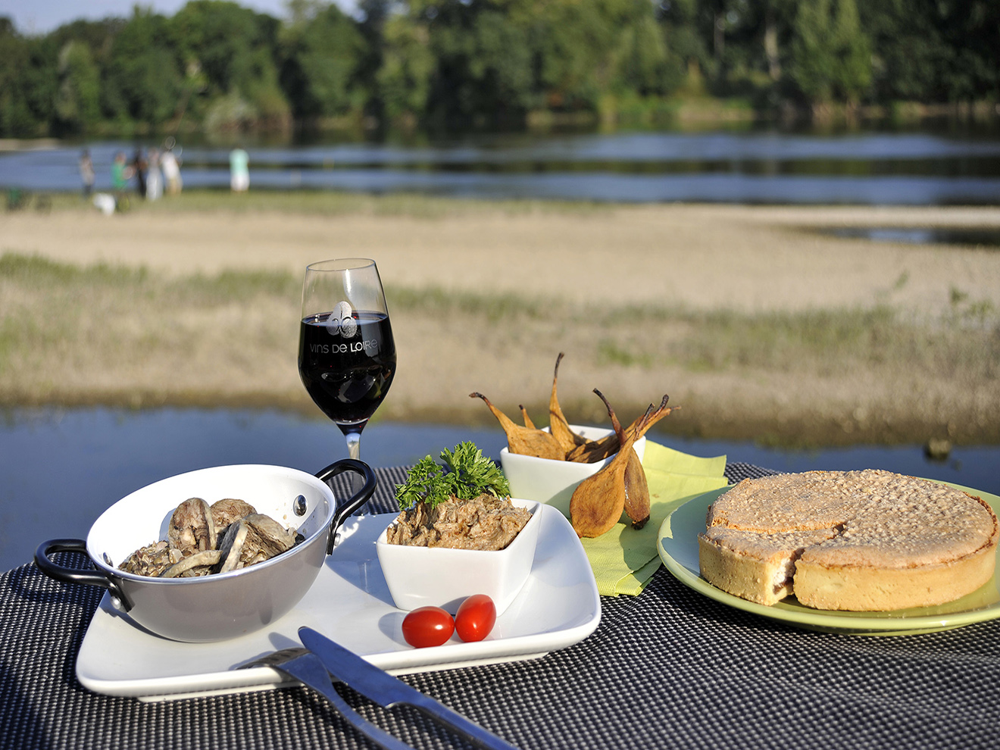

Congratulations ! You have reached level 6 ! As a reward, here is a description of the area you will visit.
Pays de la Loire
Présentation of the region
The Pays de la Loire is a region from the west of france, containing the Loire-Atlantique, the maine et loire, the mayenne, the sarthe, and the vendée. Nantes is the city with the most people and it is the chief town. Bordered to the west by the Atlantic Ocean, it is also bounded to the north by the Brittany and Normandy regions, to the east by the Center-Val de Loire with which it shares the natural region of the Loire Valley and to the south by Nouvelle-Aquitaine. The region owes its name to the main river that crosses it: the Loire.
Specialities
- Brioche Vendéenne
- Marinate shad
- Asparagus in Nates
- shortbread biscuit

Important places to visit :
- Angers : This fortified town was once the stronghold of the County of Anjou. Located in the north of Maine, a long and quiet river, it is a young, student and quite cosmopolitan city. One of the must-do places in the Pays de la Loire is in this town, the Château d'Angers. This impressive two-tone castle will amaze you with its beautiful slate and tuffeau towers.
- The island of Noirmoutier : Are you coming to visit the Pays de la Loire? Then you must not miss a tour on the famous Island of Noirmoutier. This place will delight nature lovers. They should visit the Polder Nature Reserve of Sevastopol. But the travelers will also discover the salt marshes, the mills and different ports, the castle of Noirmoutier, the charming houses of fishermen as well as beautiful beaches of fine sand!
- "Les Sables d’Olonne : The tourist capital of the Vendée, Les Sables-d'Olonne is one of the must-see places to visit in the Pays de la Loire. Known as the starting and finishing point of the Vendée Globe, this city is ideal for relaxing on the beach or even taking surf lessons. During your stay, take the time to lose yourself in its charming neighborhoods, including that of Penotte Island. But above all, you should taste some delicious lobster with mayonnaise. Accompany them with a glass of fresh muscadet on the marina and you will enjoy a wonderful moment!
- La Baie de La Baule : If you come to visit the Pays de la Loire, do not miss to join the longest square in Europe. Stretching for nearly 9km, between Le Pouliguen and Pornichet, the bay of La Baule attracts a lot of visitors.Riders, joggers and cyclists ride it in the morning. The plagists occupy it all day long. The evening is devoted to casino players. After all, La Baule is known for being a chic seaside city, whose prestigious hotels, gourmet restaurants, vintage luxury villas and casinos are the spearhead!